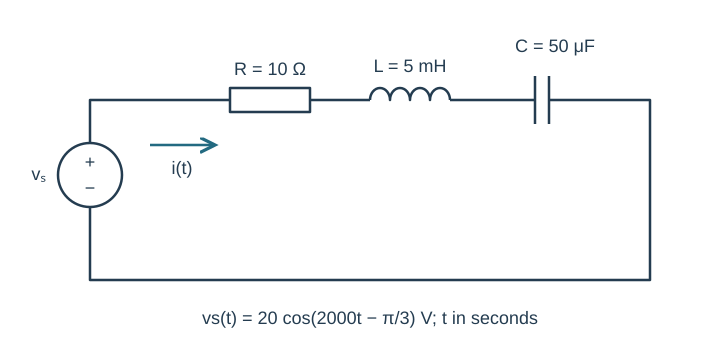
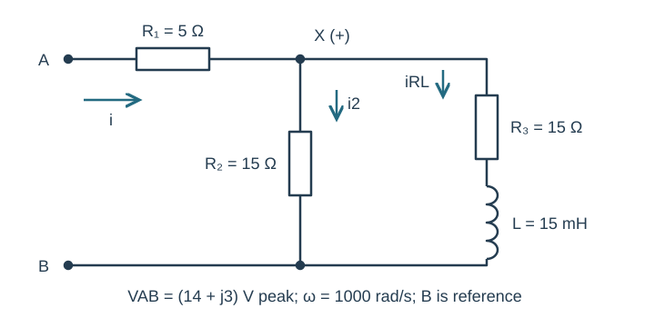
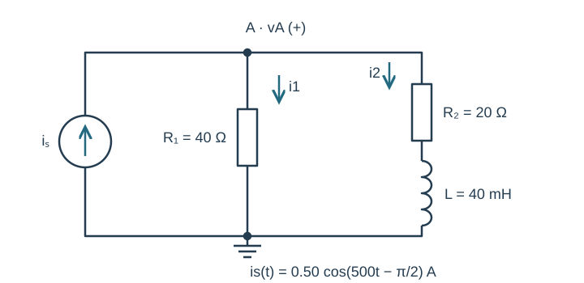
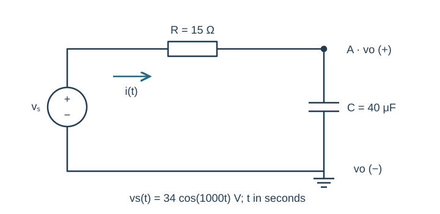
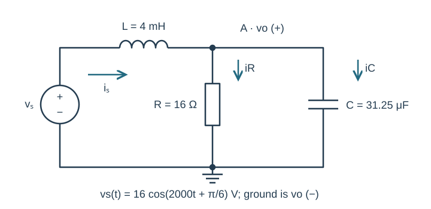

Course practice / Batch 13 / 2026-10-11 PDT
ENGR 202
正弦、相量与阻抗
Sinusoids, phasors & impedance · 第 13 组：HW 1 风格 5 题 + HW 2 风格 5 题
Build a waveform from two successive peak readings
A zero-offset sinusoidal voltage has positive peak value 5 V. Successive positive maxima occur at t = 0.75 ms and t = 4.75 ms. Use a positive-amplitude cosine and express t in seconds.
- Find period, frequency, angular frequency and principal phase. Write v(t) and its peak phasor.
- Find v(0), the first downward zero crossing, first minimum and first upward zero crossing at or after t = 0. Give times in ms.
- Sketch the first full cycle after t = 0 on labeled axes, marking both the measured maximum and calculated events in time order.
中文提示（不含解答）
两个相邻正峰值之间是一个周期；峰值时总余弦相位必须是整圈。
Wrap the phase after a delay longer than a quarter cycle
Let \(x(t)=7\cos(800t+5\pi/4)\;\mathrm V\) and \(y(t)=x(t-3\pi/3200\;\mathrm s)\).
- Write principal-phase cosine expressions and peak phasors for x and y.
- Find the delay in ms and as a fraction of the period. State the unwrapped phase change, explaining why the principal phase can appear to increase after a delay.
- Compare x(0), y(0), x(T/4) and y(T/4), and draw both phasors on equal-scale axes.
中文提示（不含解答）
相位变化与相位主值不是同一件事；先减去真实延迟造成的角度，再加减整圈。
Track a third-quadrant number through multiplication
Let \(z=-4-j3\) and \(w=1-j2\).
- Calculate z + w, zw, z/w and 1/z in rectangular form.
- Convert z, w, zw and z/w to polar form with positive magnitudes and phases in (−180°,180°].
- Verify (z/w)w = z and z(1/z) = 1. Plot z and w to scale and explain the quadrant of zw.
中文提示（不含解答）
乘积相位相加后可能越过 −180°；用实部和虚部复核象限，而不是只看 atan 的商。
Combine a symmetric pair and a signed sine
The voltage is \(v(t)=5\cos(600t+\pi/6)+5\cos(600t-\pi/6)-3\sin(600t)\;\mathrm V\).
- Write three cosine-reference peak phasors and add them in rectangular form. Identify which imaginary components cancel.
- Find total magnitude and principal phase and write a single positive-amplitude cosine. Check both forms at t = 0 and t = π/1200 s.
- Draw a tip-to-tail plot of all three signed contributions on equal-scale real and imaginary axes.
中文提示（不含解答）
对称角度的两个余弦相量具有相反的虚部；第三项的负正弦仍要单独处理。
Find the missing contribution to a two-component target
A known voltage is \(x(t)=4\cos(700t+\pi/3)\;\mathrm V\). Choose another same-frequency voltage u(t) so that \(x(t)+u(t)=6\cos(700t)-2\sin(700t)\;\mathrm V\) for every t.
- Find the target and known peak phasors, then the required U in rectangular and polar form.
- Write u(t) as one positive-amplitude cosine. Verify the complete sum at t = 0 and t = π/1400 s.
- Draw the known phasor, U and their target sum to scale. Explain why subtracting the two amplitudes alone would not determine U.
中文提示（不含解答）
缺少的相量等于目标减去已知相量；先统一余弦参考，再做复数减法。
Reactive drops cancel while the source keeps its phase
The source \(v_s(t)=20\cos(2000t-\pi/3)\;\mathrm V\) drives series R = 10 Ω, L = 5 mH and C = 50 μF. Current is clockwise from the positive source terminal. Element voltages are passive drops in that direction.
- Copy the time-domain circuit and draw its impedance circuit, including the source phasor. Calculate ZL, ZC, total Z and I in rectangular/polar form.
- Write i(t), calculate VR, VL and VC, and check KVL. Explain why cancellation of the two reactive drops does not make either drop zero.
- Predict i(0) and i(π/4000 s). For optional LTspice, give frequency in Hz and sine-source phase; check both points in a late steady-state cycle using labeled axes, cursor values and the stated current direction.

中文提示（不含解答）
总阻抗可以是纯实数，但电流仍会保留源本身的相位；内部电压应分别计算。
A source specified directly as a rectangular phasor
At ω = 1000 rad/s, terminal A connects through R₁ = 5 Ω to node X. One X-to-B branch is R₂ = 15 Ω. The other is R₃ = 15 Ω followed by L = 15 mH in series. B is the reference node. Apply peak VAB = (14 + j3) V; input current flows A to X and branch currents X to B.
- Draw the impedance network and show each simplification: series RL branch, parallel block, then ZAB. Give VAB and total ZAB in rectangular and polar form.
- Find input current, VX and both branch currents. Write the steady-state input current i(t).
- Find the R₁ drop, verify KCL and VAB = VR1 + VX, and compare source and input-current phases.

中文提示（不含解答）
源相量已经是直角坐标形式，不必先强行转成极坐标才运算；并联部分化简后再加串联电阻。
Use a lagging current source in an inductive network
The source \(i_s(t)=0.50\cos(500t-\pi/2)\;\mathrm A\) injects current upward into node A. One branch from A to ground is R₁ = 40 Ω; the other is R₂ = 20 Ω followed by L = 40 mH. Define vA positive at A and both branch currents downward.
- Copy the circuit and draw its phasor/impedance version. Find source phasor, total admittance and equivalent impedance.
- Find VA in rectangular/polar form and write vA(t). Find both branch-current phasors and check KCL.
- Predict vA(0) and vA(π/1000 s). For optional simulation, compare these values at the same phase positions after transients settle and explain how the reference directions affect plotted signs.

中文提示（不含解答）
串联 RL 支路先合并阻抗，再加并联导纳；源相位 −90° 不能丢掉。
Check a capacitor output against the resistor drop
The source \(v_s(t)=34\cos(1000t)\;\mathrm V\) connects through R = 15 Ω to node A. C = 40 μF connects from A to ground, also joined to the source negative terminal. Output vo is positive at A relative to ground; current flows from the source through R and C.
- Draw the impedance circuit and calculate total Z and current in rectangular/polar form.
- Use voltage division to find Vo, write vo(t), and calculate VR. Verify Vs = VR + Vo using rectangular components.
- Predict vo(0) and vo(π/2000 s). Compare the phases of current, source voltage and capacitor output.

中文提示（不含解答）
电容的阻抗带负虚部；输出分压分子用电容阻抗，电阻电压再用同一个电流计算。
An inductor before a loaded RC output
The source \(v_s(t)=16\cos(2000t+\pi/6)\;\mathrm V\) connects through L = 4 mH to node A. R = 16 Ω and C = 31.25 μF each connect from A to ground. Output vo is positive at A. Source current flows through L toward A; both load currents are downward.
- Find the source phasor, parallel-load impedance, total input impedance and source current. Draw the impedance circuit with complete source, node and reference labels.
- Find Vo in rectangular/polar form and write vo(t). Find the resistor and capacitor currents and inductor drop, and verify KCL and KVL.
- Predict vo(0) and vo(π/4000 s). Compare the output peak with the source peak. For optional LTspice, give frequency and sine-source phase, then check the two points after transients settle with units and cursor readings.

中文提示（不含解答）
输入总虚部抵消，并不表示输出电压没有相移；各支路相量要用同一个节点电压求得。